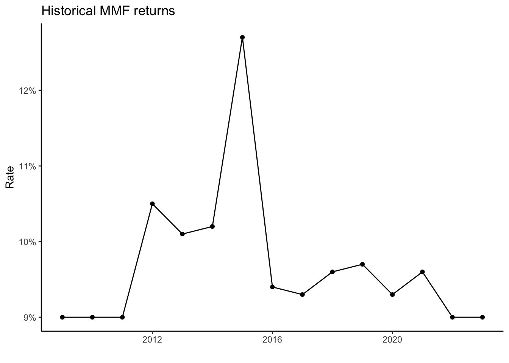
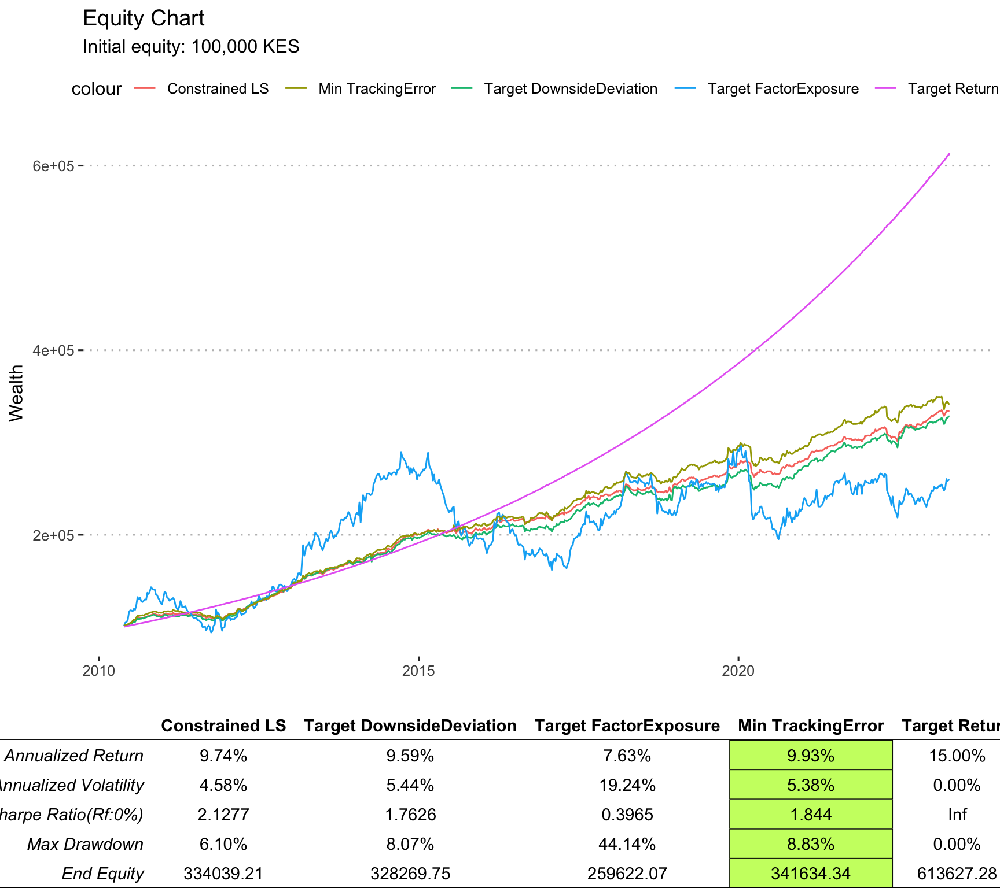
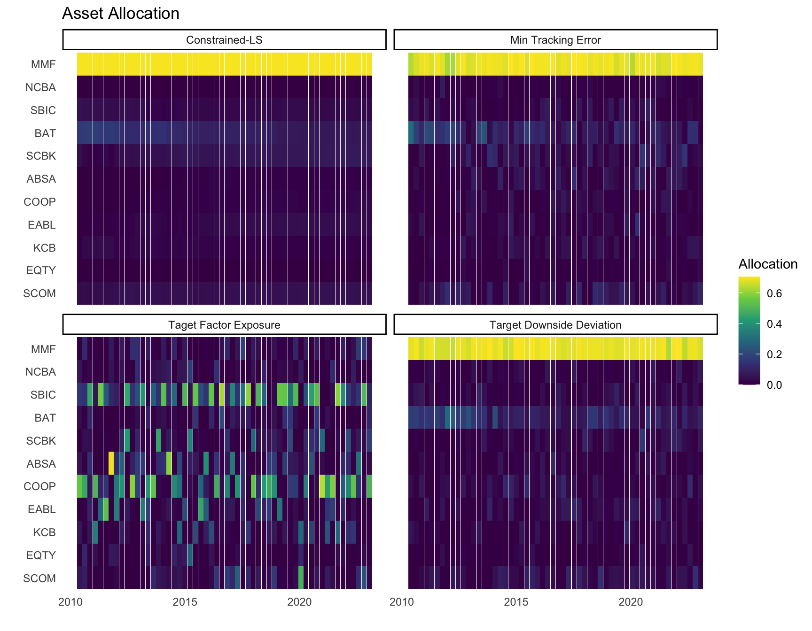
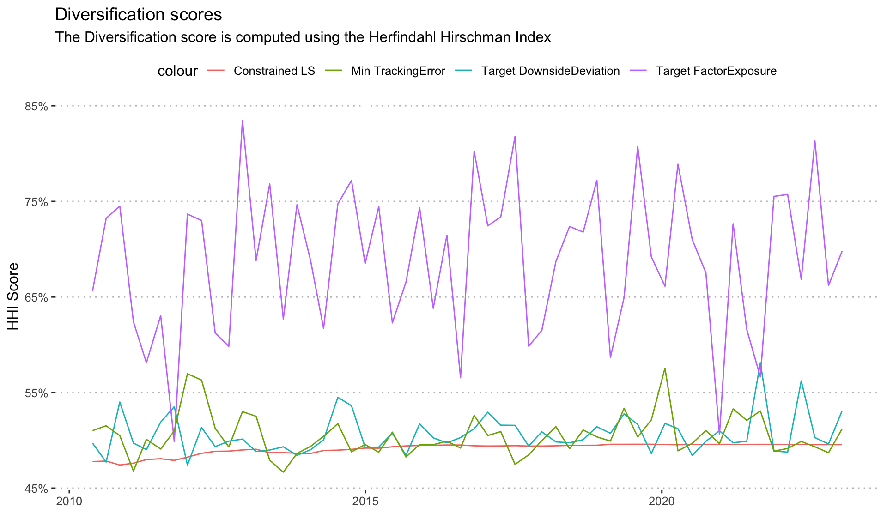

| Company Name | Ticker | Industry |
|---|---|---|
| Safaricom Plc Ord 0.05 | SCOM | Telecommunications |
| Equity Group Holdings Plc Ord 0.50 | EQTY | Banking |
| KCB Group Plc Ord 1.00 | KCB | Banking |
| East African Breweries Ltd Ord 2.00 | EABL | Manufacturing & Allied |
| The Co-operative Bank of Kenya Ltd Ord 1.00 | COOP | Banking |
| Absa Bank Kenya PLC | ABSA | Banking |
| Standard Chartered Bank Kenya Ltd Ord 5.00 | SCBK | Banking |
| British American Tobacco Kenya Plc Ord 10.00 | BAT | Manufacturing & Allied |
| Stanbic Holdings Plc ord.5.00 | SBIC | Banking |
| NIC Group Plc Ord 5.00 | NCBA | Banking |
| MMF | MMF | Cash/Cash Equivalents |
Strategy specification
This report presents a quantitative investment strategy that aims to construct a portfolio that closely tracks a \(15\%\) p.a. return, which acts as the minimum acceptable return for an investors. The strategy uses three different approaches to achieve this objective: minimum tracking error optimization, constrained least squares, target downside deviation, and target factor exposure optimization.
The strategy considers the top 10 stocks in NSE Kenya by market capitalization, plus a Money Market Fund, as the assets. The strategy is evaluated using anchored walk forward optimization, which is a robust back-testing method that optimizes the portfolio weights on multiple windows of data and tests them on out-of-sample data.
This report provides a comprehensive analysis of the performance and risk characteristics of the strategy and compares the results of the three approaches.
Investment objective
The strategy’s main goal is to offer investors a \(k\%\) MAR1, which is set to \(15\%\) p.a. in this document, by building a portfolio of equities and cash. The strategy follows various portfolio constraints to achieve this goal.
1 MAR: Minimum Acceptable Return
Investment constraints
The strategy has some constraints, such as a maximum allocation of \(70\%\) to any single asset, to avoid over exposure to one asset. The strategy is also a fully invested, long only strategy, meaning that it uses all the capital and does not take short positions. The strategy adjusts its portfolio every three months to meet its objectives.
Investment universe
The strategy considers the top 10 stocks in NSE by market capitalization, plus a Money Market Fund, as the assets. This selection ensures the liquidity required for re-balancing.
Algorithm and models
Targeting a \(15\%\) MAR, could be formulated as an index tracking problem2, where the index in this case is the \(15\%\) MAR itself. Several approaches to this index tracking problem are considered in this article. The first is a method based on the tracking error, the second method is based on constrained least squares,the third method is based on target downside deviation optimization, and the fourth method is based on the target factor exposure optimization.
2 An index tracking fund is an investment fund that is administered so that its value changes in line with a given share index. Source: Collins Dictionary
These four approaches have a similar objective which is: tracking the MAR effectively.
The tracking error approach
One way to solve the index tracking problem, is to use a minimization of tracking error optimization. The tracking error3 indicates how closely a portfolio follows a given index to which it is benchmarked. Tracking error is calculated as the standard deviation of the difference between the portfolio returns and the index returns.4
3 The tracking error is a measure of the risk in an investment portfolio that is due to active portfolio management
4 The index return in this case is simply the \(15\%\) return p.a.
A low tracking error means that the portfolio is closely aligned with the index, while a high tracking error means that the portfolio deviates significantly from the index.
We consider the construction of a portfolio based on the following constraints:
- Box Constraint: \(0 \leq w_i \leq 0.7\) for all \(i\), where \(w_i\) represents the weight of asset \(i\) in the portfolio.
- Long-Only: \(w_i \geq 0\) for all \(i\), ensuring that the portfolio consists of long positions only.
- Full Investment: \(\sum_{i} w_i = 1\), ensuring that the portfolio is fully invested.
- Tracking Error: The portfolio aims to minimize the Tracking Error to the Minimum Acceptable Return (MAR) of 15% per annum.
To formulate this problem mathematically, let \(r_i\) be the return of asset \(i\), \(w_i\) be the weight of asset \(i\) in the portfolio, and \(m\) represent the returns of the 15% MAR. The objective is to minimize the Tracking Error of the portfolio to the MAR. We can express this as follows:
\[ \text{Minimize:} \quad \sqrt{\sum_{i} (w_i \cdot r_i - m)^2} \]
\[ \text{Subject to:} \quad 0 \leq w_i \leq 0.7, \quad \forall i \]
\[ \quad w_i \geq 0, \quad \forall i \]
\[ \quad \sum_{i} w_i = 1 \]
Solving this optimization problem will provide the optimal weights \(w_i\) for constructing the portfolio that minimizes the Tracking Error to the MAR.
The constrained least squares approach
The second way to solve the index tracking problem is to use constrained least squares, which is a method that minimizes the squared difference between the portfolio returns and the index returns, subject to some constraints on the portfolio weights.
In this least squares formulation, the dependent variables are from our investment universe5, and the independent variable is the Minimum Acceptable Return (MAR) of \(15\%\).
5 The 10 stocks + MMF
To formulate this problem mathematically, let \(x_j\) be the return of stock \(i\), and let \(y\) represent the weekly MAR. The objective is to find the optimal regression coefficients, denoted as \(\beta_j\), subject to the following constraints:
- Box Constraint: \(0 \leq \beta_j \leq 0.7\) for all \(j\), where \(\beta_i\) represents the weight of asset \(j\) in the portfolio.
- Long-Only: \(\beta_j \geq 0\) for all \(j\), ensuring that the portfolio consists of long positions only.
- Full Investment: \(\sum_{j} \beta_j = 1\), ensuring that the portfolio is fully invested.
The optimization problem can be formulated as follows:
\[ \text{Minimize:} \quad \sum_{j} (y - \beta_j \cdot x_j)^2 \]
\[ \text{Subject to:} \quad 0 \leq \beta_j \leq 0.7, \quad \forall j \]
\[ \quad \sum_{j} \beta_j = 1 \]
By solving this optimization problem, we can determine the optimal values of \(\beta_i\), which represent the weights of the stocks in the portfolio.
Target downside deviation optimization approach
The third approach to the index tracking problem is to use downside deviation, which is a measure of the downside risk of a portfolio. Downside deviation is the average of the squared differences between the portfolio returns and the target index returns, only when the portfolio returns are below the target index.
In this section, we formulate the index tracking problem as a portfolio optimization problem that minimizes the downside deviation between the portfolio returns and the \(15\%\) p.a. index, subject to some constraints on the portfolio weights.
Let’s consider a portfolio construction problem with the following constraints:
- Box Constraint: \(0 \leq w_i \leq 0.7\) for all \(i\), where \(w_i\) represents the weight of asset \(i\) in the portfolio.
- Long-Only: \(w_i \geq 0\) for all \(i\), ensuring that the portfolio consists of long positions only.
- Full Investment: \(\sum_{i} w_i = 1\), ensuring that the portfolio is fully invested.
- Downside Deviation Risk: The portfolio aims to minimize the downside deviation from a Minimum Acceptable Return (MAR) of \(15\%\) per annum.
To formulate this problem mathematically, let \(r_i\) be the return of asset \(i\) and \(w_i\) be the weight of asset \(i\) in the portfolio. The objective is to minimize the downside deviation from the MAR. We can express this as follows:
\[ \text{Minimize:} \quad \sqrt{\frac{1}{n} \sum_{i} \left(\min(0, r_i - \text{MAR})\right)^2} \]
\[ \text{Subject to:} \quad 0 \leq w_i \leq 0.7, \quad \forall i \]
\[ \quad \sum_{i} w_i = 1 \]
Here, \(n\) represents the number of assets in the portfolio.
Solving this optimization problem will provide the optimal weights \(w_i\) for constructing the portfolio.
Target factor exposure optimization approach
In the fourth approach, we formulate the index tracking problem as a portfolio optimization problem that minimizes the factor exposure of the portfolio to the \(15\%\) index, subject to the given constraints on the portfolio weights. We set the target factor exposure to zero, implying a zero slope, hence perfect tracking.6
6 Since the 15% MAR is simply a constant line of points, then a perfect tracking portfolio would pass through these points, and have an intercept equal to the MAR, and a slope of 0.
In this approach, we consider a portfolio construction problem with the following constraints:
- Box Constraint: \(0 \leq w_i \leq 0.7\) for all \(i\), where \(w_i\) represents the weight of asset \(i\) in the portfolio.
- Long-Only: \(w_i \geq 0\) for all \(i\), ensuring that the portfolio consists of long positions only.
- Full Investment: \(\sum_{i} w_i = 1\), ensuring that the portfolio is fully invested.
- Factor Exposure: The portfolio aims to minimize the factor exposure to a Minimum Acceptable Return (MAR) of \(15\%\) per annum, with a target factor exposure of 0.
To formulate this problem mathematically, let \(r_i\) be the return of asset \(i\), \(w_i\) be the weight of asset \(i\) in the portfolio and \(y\) be the \(15\%\) index. The objective is to minimize the factor exposure to the MAR. We can express this as follows:
\[ \text{Given:} \quad y = \beta_o + \beta_1 \times (r_i \cdot w_i) \]
\[ \text{Minimize:} \quad |\beta_1| \hspace{2 mm} \text{with target: } \hspace{2 mm} |\beta_1| = 0 \]
\[ \text{Subject to:} \quad 0 \leq w_i \leq 0.7, \quad \forall i \]
\[ \quad w_i \geq 0, \quad \forall i \]
\[ \quad \sum_{i} w_i = 1 \]
Here, \(n\) represents the number of assets in the portfolio.
Solving this optimization problem will provide the optimal weights \(w_i\) for constructing the portfolio.
Analysis report
This section shows the results of our strategy analysis for the 13-year historical period7 and aims to assess the strategy’s performance and its potential for future investment.
7 January 2009 - December 2022
Data
The data consists of the weekly returns of top 10 stocks listed in NSE Kenya by market capitalization, plus a Money Market Fund8, for the period from January 2009 to December 2022.
8 Zimele MMF
The backtesting method is anchored walk forward optimization, which is a technique that divides the data into multiple windows and optimizes the portfolio weights on each window using the target MAR of 15% as the objective function.

The optimized weights are then applied to the next window and the performance of the portfolio is measured. We repeat this process until we cover all the data and obtain a series of out-of-sample results.
The equity growth comparison curves are shown below, assuming a starting capital of 100,000 KES for the period under consideration:

From the above chart,it is evident that the constrained LS approach gave the best risk adjusted performance, while the minimum tracking error approach gave the highest end equity. The target factor exposure approach has a highly volatile equity curve, with a large drawdown making it unattractive.
It is also clear that post September 2015, the performance of the 4 portfolios as compared to the benchmark declines, although the top 3 strategies maintain a strong linear trend.
A benchmarking comparison for the four approaches is shown below:
| CLS | TDD | TFE | MTE | |
|---|---|---|---|---|
| Semi Deviation | 0.440% | 0.51% | 1.78% | 0.54% |
| Gain Deviation | 0.450% | 0.57% | 2.07% | 0.51% |
| Loss Deviation | 0.420% | 0.49% | 1.65% | 0.56% |
| Downside Deviation (MAR=15%) | 0.490% | 0.56% | 1.83% | 0.58% |
| Downside Deviation (Rf=0%) | 0.360% | 0.43% | 1.69% | 0.46% |
| Downside Frequency | 58.520% | 57.63% | 54.22% | 54.67% |
| Modified VaR (95%) | 0.820% | 0.87% | 3.28% | 1.04% |
| Modified ES (95%) | 1.320% | 0.95% | 3.28% | 2.09% |
| Omega | 0.6848 | 0.7154 | 0.9073 | 0.7277 |
Charts showing the asset allocation across time as well as the diversification as measured by the HHI statistic are shown below:

The chart indicates that for the 3 leading strategies, there is a huge allocation of capital to the MMF, than to other assets.
The constrained LS solution assigned the maximum allocation(\(70\%\)) to the MMF at all periods, and would distribute the remaining \(30\%\) to the rest.
The Target Factor Exposure solution assigned a high allocation to ticker: SBIC, and COOP majority of the times, with the rest having their second highest allocations mostly on ticker: BAT and SCOM.
A graph of the diversification target based on Herfindahl Hirschman Index is shown below:

The diversification for the target factor exposure is higher than the rest, since it avoids the trap of over-allocation to the MMF, but that certainly does not help its performance. The rest of the strategies have diversification values of about \(50\%\) across the times considered.
Conclusion
Based on the findings of the four strategies considered for the fixed return investment objective, then: the Minimum Tracking Error approach, or the Constrained Least Squares approach is preferred due to the attractiveness of their risk return properties, as compared to the rest.
It is also important to note that, past September 2015, the four strategies fail to consistently track the 15% chosen index.
Further work
Exploring enhanced index tracking, which allows for closely replicating the performance of a specific benchmark index, such as the our 15% MAR, while seeking to outperform it by applying various active management techniques.